(03) contrast play#
host: yoru, device: cuda:0
motivation:
Show code cell source
# HIDE CODE
import os, sys
from IPython.display import display
# tmp & extras dir
git_dir = os.path.join(os.environ['HOME'], 'Dropbox/git')
extras_dir = os.path.join(git_dir, 'jb-progress-25/_extras')
fig_base_dir = os.path.join(git_dir, 'jb-progress-25/figs')
tmp_dir = os.path.join(git_dir, 'jb-progress-25/tmp')
# GitHub
sys.path.insert(0, os.path.join(git_dir, '_RetinaV1'))
from figures.convergence import plot_convergence
from figures.imgs import plot_weights
from figures.fighelper import *
from main.train import *
# warnings, tqdm, & style
warnings.filterwarnings('ignore', category=DeprecationWarning)
warnings.filterwarnings('ignore', category=FutureWarning)
warnings.filterwarnings('ignore', category=UserWarning)
from rich.jupyter import print
%matplotlib inline
set_style()
device_idx = 1
device = f'cuda:{device_idx}'
print(f"device: {device} ——— host: {os.uname().nodename}")
device: cuda:1 ——— host: yoru
Model with warmup#
Less sparse, but higher R^2
a = 'Kyoto16-bw_m(g0+logi,p1)_t(16+64×(1,1))_b(128,32)_k(128,512)'
b = 'debug-fisher-xi_b200-ep800-lr(0.002)_temp(0.01:0.5)_gr(1000)_(2025_04_22,22:37)'
tr, meta = load_model(pjoin(a, b), device=device)
meta['checkpoint']
800
data_standard = tr.dl_vld.dataset.tensors[0]
data_high_contrast = data_standard * 2
histplot(data_standard.ravel(), stat='percent', color='k')
histplot(data_high_contrast.ravel(), stat='percent', color='r')
plt.show()
torch.std(data_standard), torch.std(data_high_contrast)
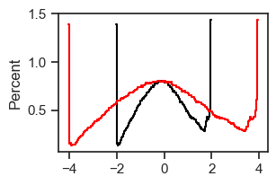
(tensor(1.0040, device='cuda:1'), tensor(2.0081, device='cuda:1'))
kws_dl = dict(
batch_size=200,
drop_last=False,
shuffle=False,
)
dl_high_contrast = torch.utils.data.DataLoader(
torch.utils.data.TensorDataset(data_high_contrast),
**kws_dl,
)
kws = dict(save_freq=10, n_data_batches=2, data_batch_sz=5000)
output = tr.xtract_ftr('vld', **kws)
output_hc = tr.xtract_ftr(dl_high_contrast, **kws)
100%|███████████████████████████████████| 2/2 [00:23<00:00, 11.88s/it]
100%|███████████████████████████████████| 2/2 [00:23<00:00, 11.71s/it]
quantile_qs = [0.9, 0.95, 0.99, 0.999, 1.0]
for t_idx, actual_time in enumerate(output['times']):
if actual_time not in [1, 10, 100, 1000]:
continue
spks = output['p1']['samples'][:, t_idx]
spks_hc = output_hc['p1']['samples'][:, t_idx]
quantiles = {f"q = {q}": np.quantile(spks, q) for q in quantile_qs}
quantiles_hc = {f"q = {q}": np.quantile(spks_hc, q) for q in quantile_qs}
print(f"time: {actual_time}\nquantiles: {quantiles}\nquantiles_hc: {quantiles_hc}\n")
time: 1 quantiles: {'q = 0.9': 4.0, 'q = 0.95': 4.0, 'q = 0.99': 6.0, 'q = 0.999': 9.0, 'q = 1.0': 27.0} quantiles_hc: {'q = 0.9': 4.0, 'q = 0.95': 5.0, 'q = 0.99': 6.0, 'q = 0.999': 13.0, 'q = 1.0': 63.0}
time: 10 quantiles: {'q = 0.9': 4.0, 'q = 0.95': 6.0, 'q = 0.99': 11.0, 'q = 0.999': 35.0, 'q = 1.0': 167.0} quantiles_hc: {'q = 0.9': 6.0, 'q = 0.95': 10.0, 'q = 0.99': 33.0, 'q = 0.999': 123.0, 'q = 1.0': 535.0}
time: 100 quantiles: {'q = 0.9': 4.0, 'q = 0.95': 7.0, 'q = 0.99': 15.0, 'q = 0.999': 30.0, 'q = 1.0': 100.0} quantiles_hc: {'q = 0.9': 10.0, 'q = 0.95': 17.0, 'q = 0.99': 37.0, 'q = 0.999': 110.0, 'q = 1.0': 580.0}
time: 1000 quantiles: {'q = 0.9': 3.0, 'q = 0.95': 7.0, 'q = 0.99': 16.0, 'q = 0.999': 33.0, 'q = 1.0': 124.0} quantiles_hc: {'q = 0.9': 10.0, 'q = 0.95': 17.0, 'q = 0.99': 39.0, 'q = 0.999': 116.0, 'q = 1.0': 541.0}
fig, axes = create_figure(2, 2, (5, 5), sharey='all', sharex='all')
axes[0, 0].plot(range(1, 1001), output['g0']['du_norm_0'], color='C0', label='g0')
axes[0, 0].plot(range(1, 1001), output['p1']['du_norm_0'], color='C1', label='p1')
axes[0, 1].plot(range(1, 1001), output['g0']['du_norm_1'], color='C0', label='g0')
axes[1, 0].plot(range(1, 1001), output_hc['g0']['du_norm_0'], color='C0', label='g0')
axes[1, 0].plot(range(1, 1001), output_hc['p1']['du_norm_0'], color='C1', label='p1')
axes[1, 1].plot(range(1, 1001), output_hc['g0']['du_norm_1'], color='C0', label='g0')
for ax in axes.flat:
ax.set(xscale='log', yscale='log')
for i in range(2):
axes[0, i].set(title=f"du_norm_{i}")
axes[i, 0].set(ylabel='standard' if i == 0 else 'high contrast')
add_legend(axes)
plt.show()
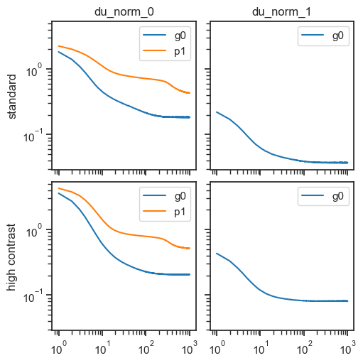
fig, axes = create_figure(2, 1, (10, 6), sharex='all', sharey='all')
u1_init = tonp(tr.model.layers['g0'].u_init[1].squeeze())
sns.kdeplot(u1_init, label='init', color='dimgrey', ls='--', ax=axes[0])
num_samples = 2000
for t_idx, actual_time in enumerate(output['times']):
if actual_time not in [1, 10, 100, 1000]:
continue
x2p = output['g0']['state_1'][:num_samples, t_idx].ravel()
sns.kdeplot(x2p, label=f't={actual_time}', ax=axes[0])
x2p = output_hc['g0']['state_1'][:num_samples, t_idx].ravel()
sns.kdeplot(x2p, label=f't={actual_time}', ax=axes[1])
# sns.histplot(x2p, label=f't={actual_time}', element='step', fill=False, stat='percent', ax=ax)
add_legend(axes)
plt.show()
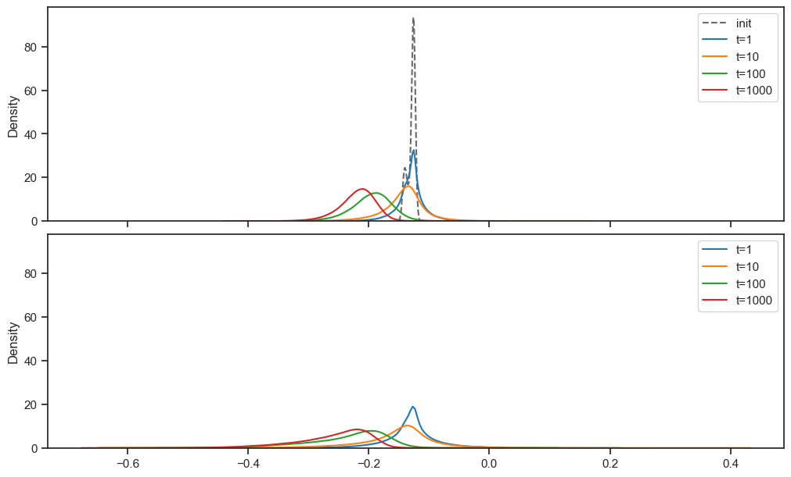
sigma_first = np.exp(output['g0']['state_1'][:, 0].ravel())
sigma_last = np.exp(output['g0']['state_1'][:, -1].ravel())
sigma_first.mean(), sigma_last.mean()
(0.8780664, 0.80353564)
sigma_first = np.exp(output_hc['g0']['state_1'][:, 0].ravel())
sigma_last = np.exp(output_hc['g0']['state_1'][:, -1].ravel())
sigma_first.mean(), sigma_last.mean()
(0.8788261, 0.77276546)
fig, ax = create_figure()
ax.plot(range(1, 1001), output['p1']['r2'], label='standard', color='dimgrey')
ax.plot(range(1, 1001), output_hc['p1']['r2'], label='high contrast', color='tomato')
add_legend(ax)
ax.set(xscale='log')
plt.show()
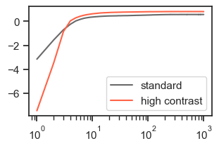
output['p1']['r2'][-1], output_hc['p1']['r2'][-1]
(0.56997395, 0.8110417)
for t_idx, actual_time in enumerate(output['times']):
if actual_time not in [1, 10, 100, 1000]:
continue
spks = output['p1']['samples'][:, t_idx]
spks_hc = output_hc['p1']['samples'][:, t_idx]
life, pop, portions = sparse_score(spks, cutoff=0.01)
life_hc, pop_hc, portions_hc = sparse_score(spks_hc, cutoff=0.01)
msg = '\n'.join([
f"time: {actual_time}",
f"lifetime: {life.mean().item():0.3f}",
f"lifetime_hc: {life_hc.mean().item():0.3f}",
f"portions:{portions}",
f"portions_hc:{portions_hc}\n",
])
print(msg)
time: 1 lifetime: 0.358 lifetime_hc: 0.369 portions:{'0': 16.7, '1': 28.7, '2': 25.8, '3': 16.1, '4': 7.8, '5': 3.2, '6': 1.1, '7': 0.4, '8+': 0.3} portions_hc:{'0': 17.0, '1': 28.3, '2': 25.3, '3': 16.0, '4': 7.9, '5': 3.3, '6': 1.3, '7': 0.4, '8+': 0.4}
time: 10 lifetime: 0.541 lifetime_hc: 0.760 portions:{'0': 22.4, '1': 27.6, '2': 21.4, '3': 13.0, '4': 7.0, '5': 3.5, '6': 1.8, '7': 1.0, '8': 0.6, '9+': 1.7} portions_hc:{'0': 25.4, '1': 24.0, '2': 17.4, '3': 11.0, '4': 6.6, '5': 3.9, '6': 2.5, '7': 1.7, '8': 1.2, '9': 0.9, '10+': 5.5}
time: 100 lifetime: 0.810 lifetime_hc: 0.829 portions:{'0': 53.1, '1': 21.7, '2': 9.4, '3': 4.7, '4': 2.8, '5': 1.8, '6': 1.3, '7': 1.0, '8': 0.8, '9+': 3.4} portions_hc:{'0': 51.2, '1': 15.5, '2': 7.4, '3': 4.4, '4': 3.1, '5': 2.4, '6': 1.9, '7': 1.6, '8': 1.3, '9': 1.1, '10': 1.0, '11+': 9.1}
time: 1000 lifetime: 0.899 lifetime_hc: 0.861 portions:{'0': 80.2, '1': 4.5, '2': 3.0, '3': 2.3, '4': 1.8, '5': 1.5, '6': 1.2, '7': 0.9, '8+': 4.6} portions_hc:{'0': 70.6, '1': 4.0, '2': 3.0, '3': 2.5, '4': 2.1, '5': 1.9, '6': 1.6, '7': 1.4, '8': 1.3, '9': 1.1, '10': 1.0, '11+': 9.5}
sigma_final = np.exp(output['g0']['state_1'][:, -1])
sigma_final_hc = np.exp(output_hc['g0']['state_1'][:, -1])
sigma_final.shape, sigma_final_hc.shape
((9821, 128), (9821, 128))
delta = sigma_final_hc - sigma_final
ratio = sigma_final_hc / sigma_final
fig, axes = create_figure(1, 2)
sns.kdeplot(delta.ravel(), ax=axes[0])
sns.kdeplot(ratio.ravel(), ax=axes[1])
plt.show()
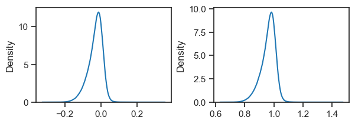
delta.mean(), ratio.mean()
(-0.03077026, 0.9616556)
posterior_mu = output['g0']['state_0'][:, -1].copy()
posterior_xi = output['g0']['state_1'][:, -1].copy()
posterior_mu_hc = output_hc['g0']['state_0'][:, -1].copy()
posterior_xi_hc = output_hc['g0']['state_1'][:, -1].copy()
def gaussian_pdf(mu, sigma):
x = np.linspace(mu - 4*sigma, mu + 4*sigma, 1000)
y = sp_stats.norm.pdf(x, mu, sigma)
return x, y
true = tr.dl_vld.dataset.tensors[0].flatten(start_dim=1)
var = tonp(torch.var(true, dim=1))
order_samples = np.argsort(var)[::-1]
sample_i = order_samples[50]
sample_i
2081
x = tonp(tr.dl_vld.dataset.tensors[0][sample_i].squeeze())
fig, ax = create_figure(1, 1, (1.22,) * 2)
imshow(x, cmap='Greys')
remove_ticks(ax, False)
plt.show()
neuron_i = 83 # 66
tr.model.show(order=[neuron_i], method='abs-max', dpi=30);
mu = posterior_mu[sample_i, neuron_i]
sigma = np.exp(posterior_xi[sample_i, neuron_i])
mu_hc = posterior_mu_hc[sample_i, neuron_i]
sigma_hc = np.exp(posterior_xi_hc[sample_i, neuron_i])
(mu, sigma), (mu_hc, sigma_hc)
((1.8876828, 0.8056896), (2.2336085, 0.7020511))
fig, ax = create_figure()
ax.plot(*gaussian_pdf(mu, sigma), color='dimgrey', label='true')
ax.plot(*gaussian_pdf(mu_hc, sigma_hc), color='tomato', label='hc')
add_legend(ax)
plt.show()
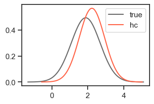
fig = tr.model.layers['g0'].activation.show(neuron_i, x_range=(-6, 6))
plt.show()
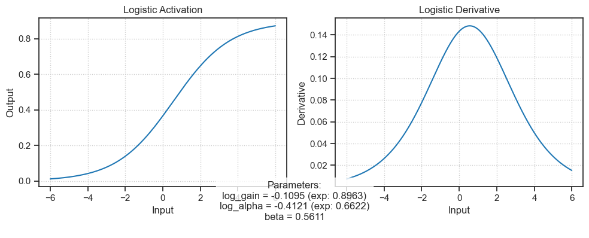
# g = log_gain
# a = log_alpha
# b = beta
Model w/o warmup#
sparse, but lower R^2
a = 'Kyoto16-bw_m(g0+logi,p1)_t(16×(1,1))_b(8,8)_k(128,512)'
b = 'b200-ep800-lr(0.002)_temp(0.01:0.5)_gr(1000)_(2025_05_02,21:16)'
tr, meta = load_model(pjoin(a, b), device=device)
meta['checkpoint']
800
data_standard = tr.dl_vld.dataset.tensors[0]
data_high_contrast = data_standard * 2
histplot(data_standard.ravel(), stat='percent', color='k')
histplot(data_high_contrast.ravel(), stat='percent', color='r')
plt.show()
torch.std(data_standard), torch.std(data_high_contrast)
(tensor(1.0040, device='cuda:1'), tensor(2.0081, device='cuda:1'))
kws_dl = dict(
batch_size=200,
drop_last=False,
shuffle=False,
)
dl_high_contrast = torch.utils.data.DataLoader(
torch.utils.data.TensorDataset(data_high_contrast),
**kws_dl,
)
kws = dict(save_freq=10, n_data_batches=2, data_batch_sz=5000)
output = tr.xtract_ftr('vld', **kws)
output_hc = tr.xtract_ftr(dl_high_contrast, **kws)
100%|███████████████████████████████████| 2/2 [00:23<00:00, 11.90s/it]
100%|███████████████████████████████████| 2/2 [00:23<00:00, 12.00s/it]
quantile_qs = [0.9, 0.95, 0.99, 0.999, 1.0]
for t_idx, actual_time in enumerate(output['times']):
if actual_time not in [1, 10, 100, 1000]:
continue
spks = output['p1']['samples'][:, t_idx]
spks_hc = output_hc['p1']['samples'][:, t_idx]
quantiles = {f"q = {q}": np.quantile(spks, q) for q in quantile_qs}
quantiles_hc = {f"q = {q}": np.quantile(spks_hc, q) for q in quantile_qs}
print(f"time: {actual_time}\nquantiles: {quantiles}\nquantiles_hc: {quantiles_hc}\n")
time: 1 quantiles: {'q = 0.9': 2.0, 'q = 0.95': 2.0, 'q = 0.99': 3.0, 'q = 0.999': 5.0, 'q = 1.0': 11.0} quantiles_hc: {'q = 0.9': 2.0, 'q = 0.95': 2.0, 'q = 0.99': 4.0, 'q = 0.999': 8.0, 'q = 1.0': 25.0}
time: 10 quantiles: {'q = 0.9': 1.0, 'q = 0.95': 2.0, 'q = 0.99': 4.0, 'q = 0.999': 9.0, 'q = 1.0': 32.0} quantiles_hc: {'q = 0.9': 3.0, 'q = 0.95': 6.0, 'q = 0.99': 18.0, 'q = 0.999': 39.0, 'q = 1.0': 172.0}
time: 100 quantiles: {'q = 0.9': 0.0, 'q = 0.95': 1.0, 'q = 0.99': 5.0, 'q = 0.999': 10.0, 'q = 1.0': 40.0} quantiles_hc: {'q = 0.9': 4.0, 'q = 0.95': 7.0, 'q = 0.99': 19.0, 'q = 0.999': 41.0, 'q = 1.0': 174.0}
time: 1000 quantiles: {'q = 0.9': 0.0, 'q = 0.95': 1.0, 'q = 0.99': 5.0, 'q = 0.999': 10.0, 'q = 1.0': 39.0} quantiles_hc: {'q = 0.9': 4.0, 'q = 0.95': 8.0, 'q = 0.99': 20.0, 'q = 0.999': 43.0, 'q = 1.0': 19408.0}
fig, axes = create_figure(2, 2, (5, 5), sharey='all', sharex='all')
axes[0, 0].plot(range(1, 1001), output['g0']['du_norm_0'], color='C0', label='g0')
axes[0, 0].plot(range(1, 1001), output['p1']['du_norm_0'], color='C1', label='p1')
axes[0, 1].plot(range(1, 1001), output['g0']['du_norm_1'], color='C0', label='g0')
axes[1, 0].plot(range(1, 1001), output_hc['g0']['du_norm_0'], color='C0', label='g0')
axes[1, 0].plot(range(1, 1001), output_hc['p1']['du_norm_0'], color='C1', label='p1')
axes[1, 1].plot(range(1, 1001), output_hc['g0']['du_norm_1'], color='C0', label='g0')
for ax in axes.flat:
ax.set(xscale='log', yscale='log')
for i in range(2):
axes[0, i].set(title=f"du_norm_{i}")
axes[i, 0].set(ylabel='standard' if i == 0 else 'high contrast')
add_legend(axes)
plt.show()
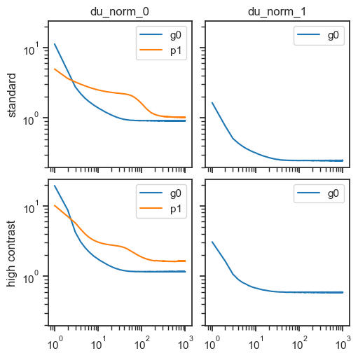
fig, axes = create_figure(2, 1, (10, 6), sharex='all', sharey='all')
u1_init = tonp(tr.model.layers['g0'].u_init[1].squeeze())
sns.kdeplot(u1_init, label='init', color='dimgrey', ls='--', ax=axes[0])
num_samples = 2000
for t_idx, actual_time in enumerate(output['times']):
if actual_time not in [1, 10, 100, 1000]:
continue
x2p = output['g0']['state_1'][:num_samples, t_idx].ravel()
sns.kdeplot(x2p, label=f't={actual_time}', ax=axes[0])
x2p = output_hc['g0']['state_1'][:num_samples, t_idx].ravel()
sns.kdeplot(x2p, label=f't={actual_time}', ax=axes[1])
# sns.histplot(x2p, label=f't={actual_time}', element='step', fill=False, stat='percent', ax=ax)
add_legend(axes)
plt.show()
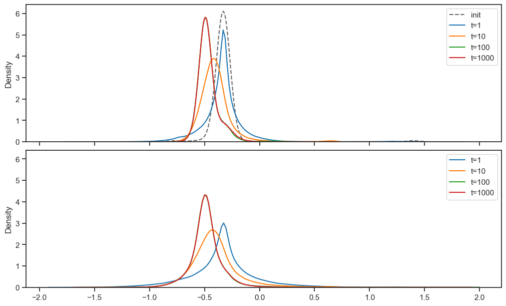
sigma_first = np.exp(output['g0']['state_1'][:, 0].ravel())
sigma_last = np.exp(output['g0']['state_1'][:, -1].ravel())
sigma_first.mean(), sigma_last.mean()
(0.73805904, 0.6305221)
sigma_first = np.exp(output_hc['g0']['state_1'][:, 0].ravel())
sigma_last = np.exp(output_hc['g0']['state_1'][:, -1].ravel())
sigma_first.mean(), sigma_last.mean()
(0.76746947, 0.6246167)
fig, ax = create_figure()
ax.plot(range(1, 1001), output['p1']['r2'], label='standard', color='dimgrey')
ax.plot(range(1, 1001), output_hc['p1']['r2'], label='high contrast', color='tomato')
add_legend(ax)
ax.set(xscale='log')
plt.show()
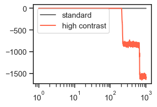
output['p1']['r2'][-1], output_hc['p1']['r2'][-1]
(0.24428608, -1586.9897)
output['p1']['r2'][100], output_hc['p1']['r2'][100]
(0.24727748, 0.5874909)
for t_idx, actual_time in enumerate(output['times']):
if actual_time not in [1, 10, 100, 1000]:
continue
spks = output['p1']['samples'][:, t_idx]
spks_hc = output_hc['p1']['samples'][:, t_idx]
life, pop, portions = sparse_score(spks, cutoff=0.01)
life_hc, pop_hc, portions_hc = sparse_score(spks_hc, cutoff=0.01)
msg = '\n'.join([
f"time: {actual_time}",
f"lifetime: {life.mean().item():0.3f}",
f"lifetime_hc: {life_hc.mean().item():0.3f}",
f"portions:{portions}",
f"portions_hc:{portions_hc}\n",
])
print(msg)
time: 1 lifetime: 0.698 lifetime_hc: 0.712 portions:{'0': 63.9, '1': 26.0, '2': 7.3, '3': 2.0, '4': 0.6, '5+': 0.2} portions_hc:{'0': 63.3, '1': 24.9, '2': 7.4, '3': 2.5, '4': 1.0, '5+': 0.9}
time: 10 lifetime: 0.818 lifetime_hc: 0.869 portions:{'0': 72.1, '1': 19.8, '2': 5.1, '3': 1.6, '4': 0.7, '5+': 0.7} portions_hc:{'0': 66.3, '1': 16.3, '2': 5.9, '3': 2.9, '4': 1.7, '5': 1.2, '6': 0.9, '7+': 4.8}
time: 100 lifetime: 0.948 lifetime_hc: 0.887 portions:{'0': 90.7, '1': 4.7, '2': 1.9, '3': 1.0, '4': 0.6, '5+': 1.0} portions_hc:{'0': 77.6, '1': 6.0, '2': 3.5, '3': 2.5, '4': 1.9, '5': 1.5, '6': 1.1, '7': 0.9, '8+': 5.0}
time: 1000 lifetime: 0.953 lifetime_hc: 0.988 portions:{'0': 92.2, '1': 3.2, '2': 1.8, '3': 1.1, '4': 0.6, '5+': 1.1} portions_hc:{'0': 79.7, '1': 4.3, '2': 3.2, '3': 2.4, '4': 1.8, '5': 1.4, '6': 1.1, '7': 0.9, '8+': 5.1}
sigma_final = np.exp(output['g0']['state_1'][:, -1])
sigma_final_hc = np.exp(output_hc['g0']['state_1'][:, -1])
sigma_final.shape, sigma_final_hc.shape
((9821, 128), (9821, 128))
delta = sigma_final_hc - sigma_final
ratio = sigma_final_hc / sigma_final
fig, axes = create_figure(1, 2)
sns.kdeplot(delta.ravel(), ax=axes[0])
sns.kdeplot(ratio.ravel(), ax=axes[1])
plt.show()
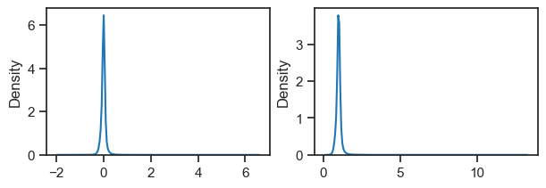
delta.mean(), ratio.mean()
(-0.005905243, 0.995492)
posterior_mu = output['g0']['state_0'][:, -1].copy()
posterior_xi = output['g0']['state_1'][:, -1].copy()
posterior_mu_hc = output_hc['g0']['state_0'][:, -1].copy()
posterior_xi_hc = output_hc['g0']['state_1'][:, -1].copy()
def gaussian_pdf(mu, sigma):
x = np.linspace(mu - 4*sigma, mu + 4*sigma, 1000)
y = sp_stats.norm.pdf(x, mu, sigma)
return x, y
true = tr.dl_vld.dataset.tensors[0].flatten(start_dim=1)
var = tonp(torch.var(true, dim=1))
order_samples = np.argsort(var)[::-1]
sample_i = order_samples[50]
sample_i
2081
x = tonp(tr.dl_vld.dataset.tensors[0][sample_i].squeeze())
fig, ax = create_figure(1, 1, (1.22,) * 2)
imshow(x, cmap='Greys')
remove_ticks(ax, False)
plt.show()
neuron_i = 64 # 66
tr.model.show(order=[neuron_i], method='abs-max', dpi=30);
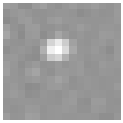
mu = posterior_mu[sample_i, neuron_i]
sigma = np.exp(posterior_xi[sample_i, neuron_i])
mu_hc = posterior_mu_hc[sample_i, neuron_i]
sigma_hc = np.exp(posterior_xi_hc[sample_i, neuron_i])
(mu, sigma), (mu_hc, sigma_hc)
((3.3483214, 0.60855), (4.0044537, 0.61255246))
fig, ax = create_figure()
ax.plot(*gaussian_pdf(mu, sigma), color='dimgrey', label='true')
ax.plot(*gaussian_pdf(mu_hc, sigma_hc), color='tomato', label='hc')
add_legend(ax)
plt.show()
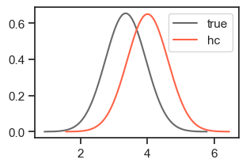
fig = tr.model.layers['g0'].activation.show(neuron_i, x_range=(-6, 6))
plt.show()
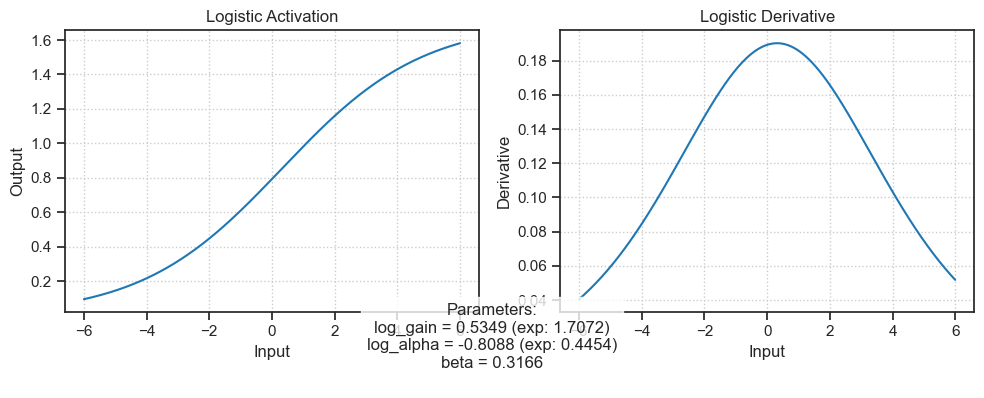